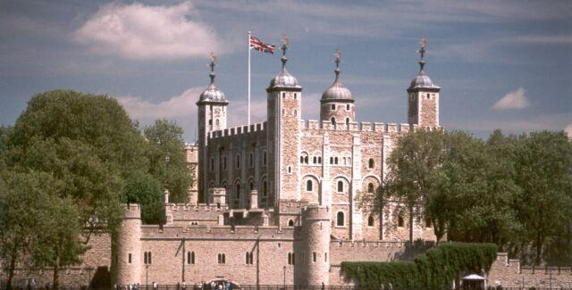
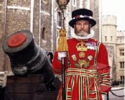
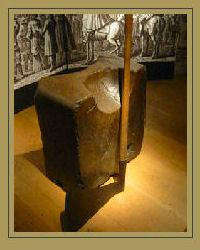
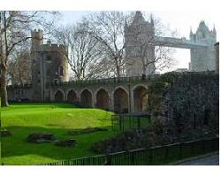
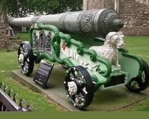
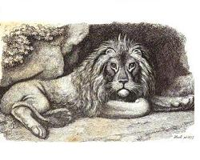

The humble Address of the Tower of London
L'humble adresse de la Tour de Londres
From the MS at Towneley Hall
Tune - MélodieNo tune known. Replaced by "As I roved"
see Jemmy Dawson
Sequenced by Christian Souchon


|
The humble Address of the Tower of London [1]
to George the 2nd 1748. 1. Let England now lament her freedom lost, And think how dear a German king has cost, Too late grown wise, let Tories think with tears, How ill they've husbanded these threescore years. [2] 2. Just is my joy! My transports are sincere, Thee GEORGE I welcome, Thee my walls revere; Thy German savage rule proclaims my power, And in bright terror reinstates the Tower! 3. No more shall gaping Wits, and staring clowns, With awkward jests deride my harmless guns. [3] No longer shall my idle axes rust, [4] Or massey chains lay (=lie) useless in the dust. 4. No more shall tender damsells flock to see My lions, far less terrible than Thee; [5] Their dens shall now be stocked with human prey, And bones of martyred Nobles pave the way! 5. No sex, no rank, no dignity or age, No virtue shall appease or stem your rage; Thus then my power no longer shall be scorned, But all my spires with patriots' heads adorned. [6] 6. My Hill shall be enriched with loyal blood, [7] And gazing mobs wade thro' the crimson flood ; Thus Thou and I shall rule this stubborn land, With iron rod, and by the sword command. Source: "From "English Jacobite Ballads...from the MS at Towneley Hall" by A.B. Grosart (1877), page 22. |
Humble adresse de la Tour de Londres [1]
à Georges II, 1748. 1. Pleure, Angleterre, sur ta liberté perdue! Pense à tout ce que t'à coûté le roi teuton! Soixante années gâchées et vos yeux qui s'embuent. [2] Tories, vous revenez bien tard à la raison! 2. Et si je me réjouis, mes transports sont sincères: Georges, entre mes murs, est un roi bienvenu! Redorer mon horrible blason de naguère, Son régime barbare d'Allemand l'a su! 3. D'accabler mes canons impuissants de vos rires [3] Prosaïques badauds, farceurs oisifs, tremblez! Mes haches trop longtemps ont supporté l'empire De la rouille et mes chaînes trop longtemps chômé. [4] 4. Elles ne viendront plus, les tendres demoiselles, Lorgner mes lions, bien moins redoutables que toi. [5] Ossements, chairs de nobles que l'on écartèle: Leur antre désormais s'emplit de mets de choix: 5. Sexe, âge, dignité, noblesse, que t'importe? Il en faut plus pour mettre un frein à ton courroux. Quand se parent mes tours des chefs des patriotes, [6] Mon blason se redore en dépit des jaloux. 6. Que de ce sang loyal ma Colline s'abreuve! [7] Que la foule patauge en ce flot cramoisi! La férule et le glaive en fournissent la preuve: A nous deux, nous tenons ce fier peuple à merci! (Trad. Christian Souchon (c) 2011) |
|
 [1] The Tower of London : A historic castle on the north bank of the River Thames in central London, founded in 1066 by William the Conqueror who built in 1078 the White Tower which gives the entire castle its name. It was a resented symbol of oppression, inflicted upon London by the new ruling Norman elite. It "enjoyed" an enduring reputation as a place of torture and death, popularised by 16th-century religious propagandists, though executions were more commonly held on the notorious Tower Hill to the north of the castle (see note hereafter).[2] Threescore years : from 1688 ("Glorious" Revolution) to 1748 (last executions of Jacobite rebels). [3] My harmless guns : The Tower was used as a prison since at least 1100, though its primary purpose was to serve as a royal residence, a function that it lost under the Tudors (1485 - 1603) and despite attempts to refortify and repair the castle its defences lagged behind developments to deal with artillery. By the time of the accession of the Hanoverian dynasty (1714), gun platforms added under the Stuarts had decayed. The number of guns at the Tower was reduced from 118 to 45, and one contemporary commentator noted that the castle "would not hold out four and twenty hours against an army prepared for a siege".  [4] No longer shall my idle axes rust : The failure of the Jacobite uprising of 1745 heralded the arrival of Scottish prisoners at the Tower. Eighty-six persons were executed for participating in the Rising, including three peers who were executed at the Tower of London: the Lords Balmerino and Kilmarnock (18 August 1746) and Lord Lovat who had the dubious distinction of being the last man to be beheaded in England (9 April 1746). The Earl of Cromarty was condemned to death, but was granted a reprieve, very much out of pity for his wife and large family.The trial of Scottish prisoners in England was a breach of the eighteenth article of the Treaty of Union. [5] My lions : The most prominent animal collection in medieval England was the Tower Menagerie in London that began as early as 1204. It was established by King John, who reigned in England from 1199–1216, and is known to have held lions and bears. Henry III received a wedding gift in 1235 of three leopards from Frederick II, Holy Roman Emperor. The most spectacular arrivals in the early years were a white bear and an elephant, gifts from the kings of Norway and France in 1251 and in 1254 respectively. In 1264, the animals were moved to the Bulwark, which was renamed the Lion Tower, near the main western entrance of the Tower. This building was constituted by rows of cages with arched entrances, enclosed behind grilles. They were set in two storeys, and it appears that the animals used the upper cages during the day and were moved to the lower storey at night. It was opened to the public during the reign of Elizabeth I in the 16th century. During the 18th century, the price of admission was three half-pence or the supply of a cat or dog for feeding to the lions! Most of the animals were transferred in 1831 to the newly-opened London Zoo at Regent's Park. The Tower Menagerie was finally closed in 1835. In effect, the Tower Menagerie in London was the royal menagerie of England for six centuries. [6] Patriots' heads : Severing the heads of rebels and fixing them at conspicuous places were practised throughout the kingdom (see Towly's Ghost ). Maybe the word "spire" is for "spike".  [7] My Hill : Tower Hill, the site of many executions, is an elevated spot to the north west of the Tower of London. Enormous crowds congregated for the entertainment and during Lord Lovat's execution one of the crowded spectators' stands overlooking the scaffold collapsed, resulting in the death of several people. The Tower Hill memorial today marks the spot where many famous people met their end.Source for most of these notes: Wikipedia |
[1] La Tour de Londres
: Château historique sur la rive nord de la Tamise au centre de Londres, fondé en 1066 par Guillaume le Conquérant. Celui-ci construisit en 1078 la Tour Blanche qui donna son nom à l'ensemble. Ce fut le symbole haï de l'oppression infligée à Londres par la nouvelle élite normande. La Tour a longtemps "joui" d'une réputation de lieu de supplice et de mort qui lui fut faite par la propagande religieuse du 16ème siècle. En réalité, les exécutions eurent lieu, pour la plupart, sur la fameuse Colline de la Tour, au nord du château (cf. note in fine).
[2] Soixante ans : de 1688 ("Glorieuse" Révolution) à 1748 (dernières exécutions de Jacobites).  [3] Mes canons impuissants : La Tour fut utilisée comme prison depuis l'année 1100 au moins, bien que sa destination première eût été de servir de résidence royale, fonction qui fut abandonnée sous les Tudor (1485 - 1603). En dépit de tentatives de restauration et de réparation, le système de défense du château restait à la traîne des progrès en matière d'artillerie. A l'avènement de la dynastie hanovrienne (1714), les plateformes de canons ajoutées par les Stuarts étaient délabrées. le nombre de canons à la Tour était passé de 118 à 45 et un commentateur de l'époque indiquait que le château "ne saurait soutenir plus de vingt-quatre heures le siège d'une armée bien préparée."[4] Mes haches trop longtemps : L'échec du soulèvement Jacobite de 1745 se traduisit par l'arrivée de prisonniers écossais à la Tour. Quatre-vingt six personnes en tout furent exécutées pour avoir pris part au soulèvement, dont trois Pairs du royaume qui le furent à la Tour de Londres: les Lords Balmerino et Kilmarnock (18 août 1746) et Lord Lovat qui eut le contestable honneur d'être le dernier condamné à la décapitation en Angleterre (9 avril 1746). Le comte de Cromarty fut aussi condamné à mort, mais sa peine fut commuée, grâce à l'intervention de sa femme et compte tenu de sa nombreuse famille. Que des prisonniers écossais fussent jugés en Angleterre constituait une violation à l'article 18 du Traité d'union.  [5] Mes lions : La collection d'animaux la plus importante de l'Angleterre du Moyen Âge fut la Ménagerie de la Tour à Londres, entreprise dès 1204. Elle fut créée par le roi Jean, qui régna sur l'Angleterre de 1199 à 1216. Il collectionnait les lions et les ours. Henri III reçut 3 léopards en cadeau de noces, en 1235, de l'Empereur Frédéric II. Les acquisitions les plus spectaculaires furent, au début, un ours blanc et un éléphant, cadeaux des rois de Norvège et de France en 1251 et 1254 respectivement. En 1264, les animaux furent transférés vers le rempart rebaptisé "Tour des Lions", près de l'entrée ouest de la Tour. Ce bâtiment était constitué de rangées de cages superposées où l'on accédait par des portes cintrées munies de gilles. Il semble que les animaux occupaient le cages supérieures pendant la journée, et les autres la nuit. La ménagerie fut ouverte au public sous Elizabeth I, au 16ème siècle. Deux siècles plus tard le prix d'entrée était fixé à 3 demi-pennies ou la fourniture d'un chien ou d'un chat pour nourrir les lions! La plupart des animaux furent transférés en 1831 au nouveau zoo de Regent's Park. La Ménagerie de la Tour fut supprimée en 1835. Elle avait fait fonction de ménagerie royale pendant 6 siècles.[6] Chefs (têtes) des Patriotes : L'usage de couper les têtes des suppliciés et de les exposer à la vue de tous était répandu dans tout le royaume (cf. Fantôme de Towneley ). Peut-être faut-il lire, au lieu de "spire" (clocher), "spike" (pique). [7] Ma Colline : La Colline de la Tour, où eurent lieu tant d'exécutions, est un mamelon situé au nord-ouest de la Tour de Londres. Des foules énormes de curieux s'y pressaient. Pendant l'exécution de Lord Lovat, l'une des tribunes chargée de spectateurs s'effondra, entraînant la mort de plusieurs personnes. Aujourd'hui un monument marque l'emplacement où périrent plusieurs personnalités fameuses. |
|
|
|